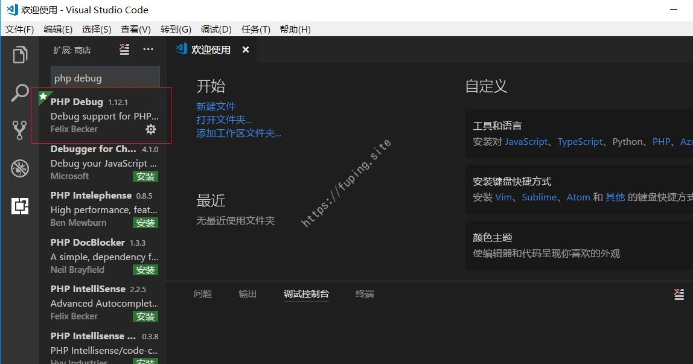
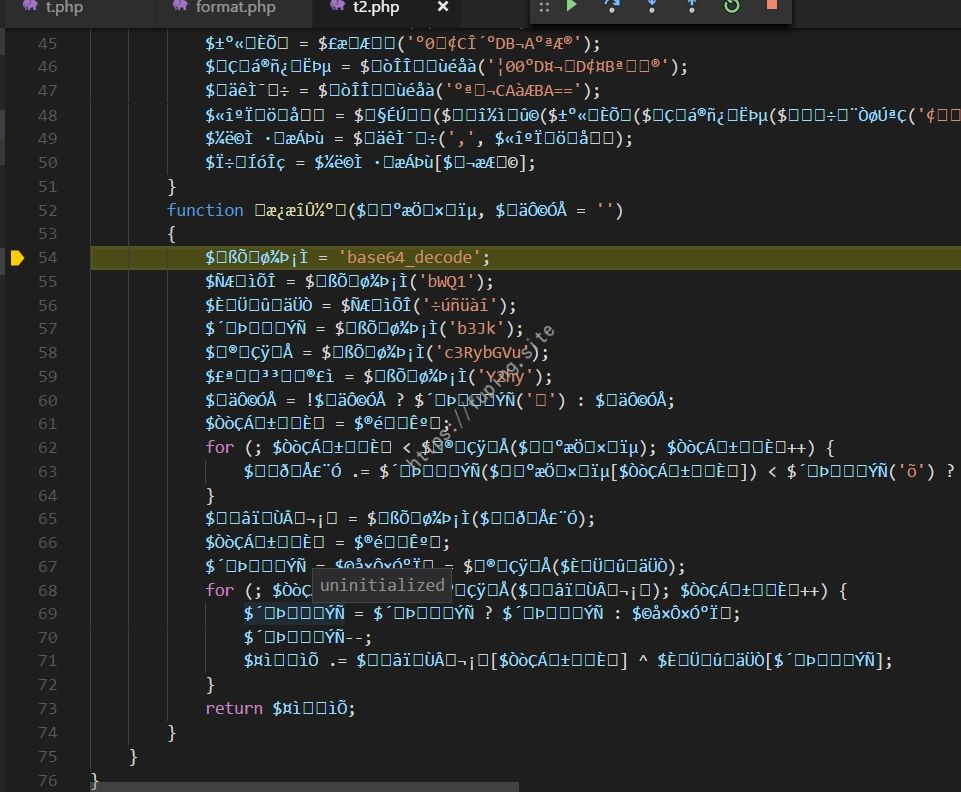
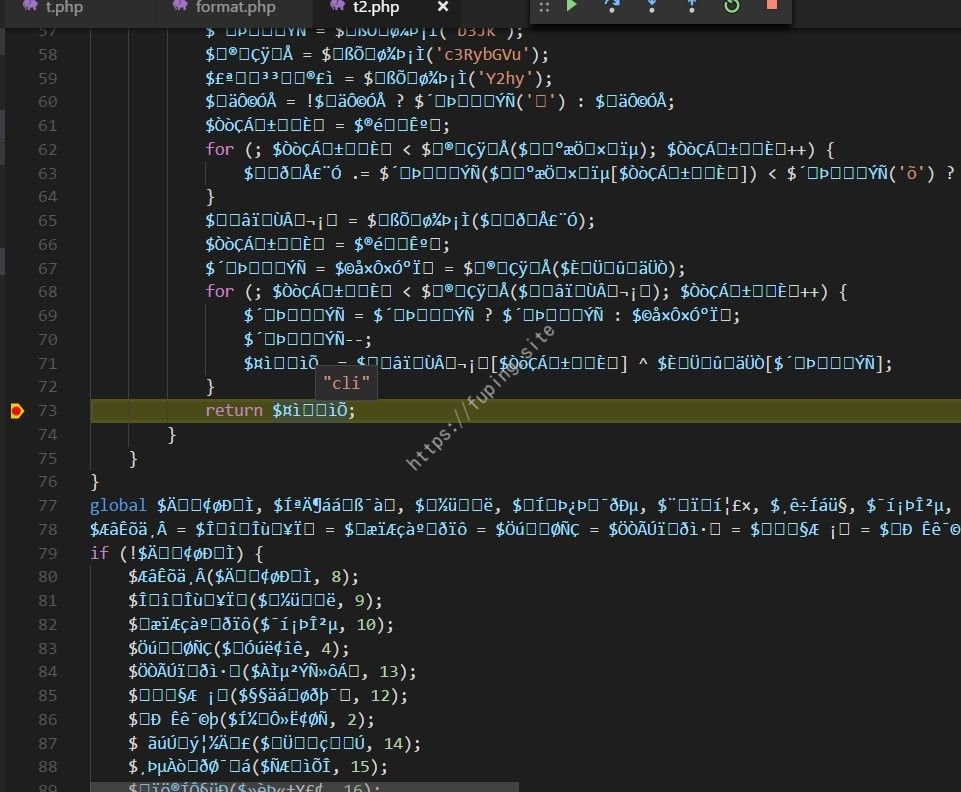
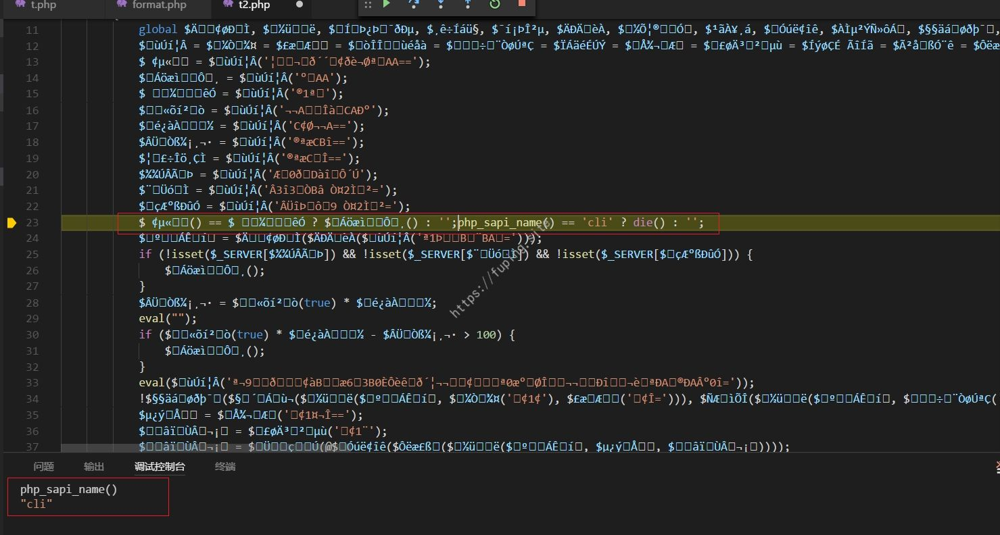
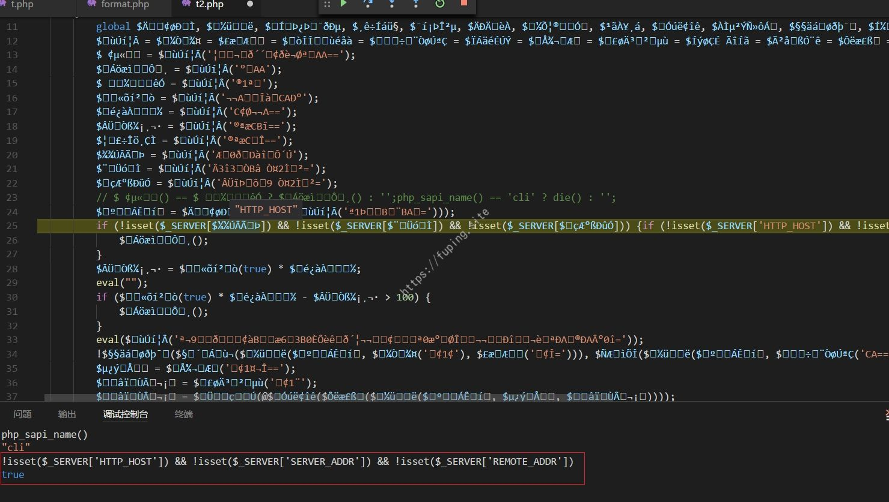
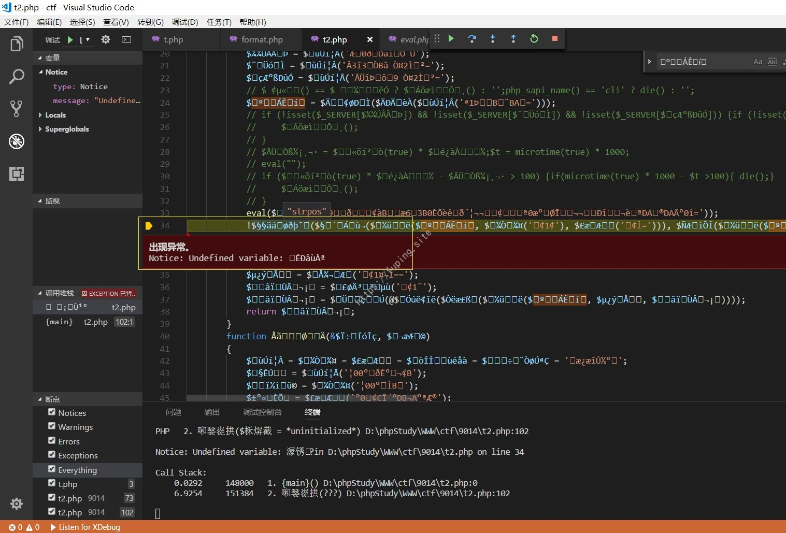
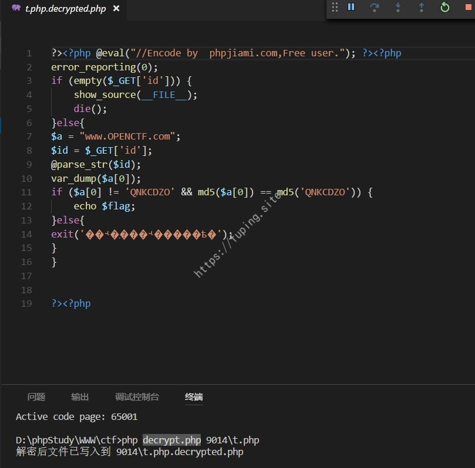

某PHP加密文件解密过程初探
最近在52PJ上看到一篇关于PHP加密解密的帖子，过程非常详细，而且作者很负责，对于别人的回答也很热心。跟着动手做了一下，记录一下遇到的问题。这里针对的是PHP加密网站的免费加密进行的调试。
0x01 环境准备
采用的IDE为VSCode，需要安装PHP DEBUG插件和XDebug 插件。
安装php debug插件比较简单，直接快捷键ctrl + shift + x 或者 “查看-扩展” 打开扩展面板。输入”php debug”搜索。

然后安装即可。
其次是安装XDebug。安装可以参考:https://xdebug.org/docs/install 。首先查看一下PHP版本。我这里用的是5.5.30。
打开php.ini，找到XDebug标签（我这里ext目录已经有xdebug.dll了，直接启用扩展即可）。如果没有XDebug标签，自己添加即可。
打开扩展。
注意设置xdebug.remote_autostart = 1。这样设置好debug和断点后，浏览器运行即可自动命中断点。
打开VSCode，设置编辑php的可执行文件路径。
这样调试所需的环境就配置好了。使用时打开左侧的调试按钮，然后添加配置语言选择PHP。
给代码添加断点后，点击开始调试按钮。浏览器访问时会在断点处停下，就可以进行调试了。
乱码的话可以通过更改文件编码来设置。快捷键Ctrl + Shift + P，选择更改文件编码，找到合适的编码。
php最大执行时间是30秒，超过30秒会自动终止，因此调试的时候要修改一下时间，在php.ini 文件中修改最大运行时间为5分钟。
1 | max_execution_time = 300 |
0x02 解密
1.独立加密
上面环境已经准备好了，下面就开始正式工作了。首先需要获得一个加密的文件。我直接利用上面的文件去某加密网站进行加密。
加密后大概是这样的
1 | /* PHP Encode by http://Www.PHPJiaMi.Com/ */error_reporting(0);ini_set("display_errors", 0);if(!defined('kcapwkef')){define('kcapwkef',__FILE__);if(!function_exists("�㒁���")){function �����ٹ�($������){global$Đ���Л�,$�…… |
使用PHP-Parser对代码进行格式化，便于调试。
执行命令composer require nikic/php-parser
利用作者的format.php将代码格式化。代码如下：
1 |
|
然后执行命令php format.php，会生成格式化的t2.php。
选择一个不是多字节的字符集，这样在调试的时候可以显示出变量代表的内容。这里用的是Western (ISO 8859-1)。
我的思路是在程序开始下断点，然后一直F10（单步跳过），当程序中断时，在此处下断点，F11进入（单步调试）。找到中断的原因，解决后再重复上述操作。
F10运行时发现在102行退出了程序。
然后在第102行下断点，F11单步运行。进入后继续F10运行。
当运行到第23行时，程序退出。前面两个变量是多字节字符，所以看不到内容，后面的是die。看代码可以看到前两个分别在第13行和第15行出现。再次运行，当运行到第13行时F11进入。调用了第52行的函数（由于函数名是乱码，我们给起个名字decode_func）。

直接在73行返回值处下断点，然后F5运行，看返回的结果。
同理，查看第15行返回的结果。

那么第23行处的代码为：php_sapi_name() == 'cli' ? die() : '';

由于这里是在命令行下执行的，所以会退出。找到了问题所在，直接注释掉此处即可。然后重新执行。运行至第26行时再次退出。

此处代码：
1 | if (!isset($_SERVER['HTTP_HOST']) && !isset($_SERVER['SERVER_ADDR']) && !isset($_SERVER['REMOTE_ADDR'])) { |
由控制台发现!isset($_SERVER['HTTP_HOST']) && !isset($_SERVER['SERVER_ADDR']) && !isset($_SERVER['REMOTE_ADDR'])
执行结果为true，所以会退出。还是屏蔽该if判断即可。重新执行。
第28-32行对应代码。
1 | $t = microtime(true) * 1000; |
此处判断执行时间大于100毫秒就退出，当然还是注释即可。
运行至第34行，程序退出。F11进入。调用了第52行的decode_func函数。
直接查看返回值。
第34行对应的代码为：
1 | !strpos(decode_func(substr($f, -45, -1)), md5(substr($f, 0, -46))) ? $undefined1() : $undefined2; |
decode_func是第52行的函数，$f是当前的文件，$undefined1和 $undefined2都不存在。查看strpos中两个参数。
那么 ! strops(string,find) 的结果为true。则执行$undefined1()，这个方法不存在，就会Error并退出程序。如下图所示。

解决方法是注释第34行或者将”!”去掉。去掉”!”会执行 $undefined2，只会警告而不会退出。这里采用”暴力”的手段，直接注释掉了。
然后重新执行程序，F5运行到断点后，F11进入，然后F10运行。
运行到38行时，查看返回的内容，是源文件的内容。这个内容就是我们需要的。
可以通过file_put_contents将文件保存即可。
查看输出的结果。
也可以在第102行用file_put_contents将文件保存。
使用原作者的decrypt.php也可解密。执行命令：php decrypt.php 9014\t.php，会生成解密后的文件”t.php.decrypted.php”。

2._LIB库加密
调试过程和独立加密类似。
还用之前的t.php作为源文件，加密后生成两个文件，一个是t.php，一个是_lib.php。
这里的t.php就比较简单了，直接调用了_lib.php文件。主要研究的还是_lib.php文件。老规矩，还是先格式化。新建文件夹viptest，将t.php和格式化后的_lib.php复制进去。然后对格式化后的_lib.php进行编码转换。下断点开始进行调试。这里断点为106行。
然后浏览器访问，就会在断点处停止。F11进入后F10单步跳过。
运行至第43行时退出，直接屏蔽这几行即可。然后重新访问。
运行至第46行，校验数据完整性，由于_lib.php是格式化而来的代码，所以此处校验不通过，就会调用不存在的方法，然后产生错误而退出。
执行的代码为
1 | $f = file_get_contents('_lib.php'); |
注释该校验即可。
继续执行，查看返回即可看到加密前的代码了。
0x03 总结
类似此类的加密文件在进行调试时需要先将代码格式化，选择不是多字节的字符集，然后进行调试。我的测试流程是首先在开始下断点，然后F10执行，当遇到程序退出时，在此处下断点，再次运行，运行到此处F11进入。进入后F10执行，找到问题所在解决后重复上述流程。
这里都是以免费加密为例，关于VIP加密的可以参考作者的文章【原创】某PHP加密文件调试解密过程 ，还有他的虚拟机加密解密的文章也值得学习。